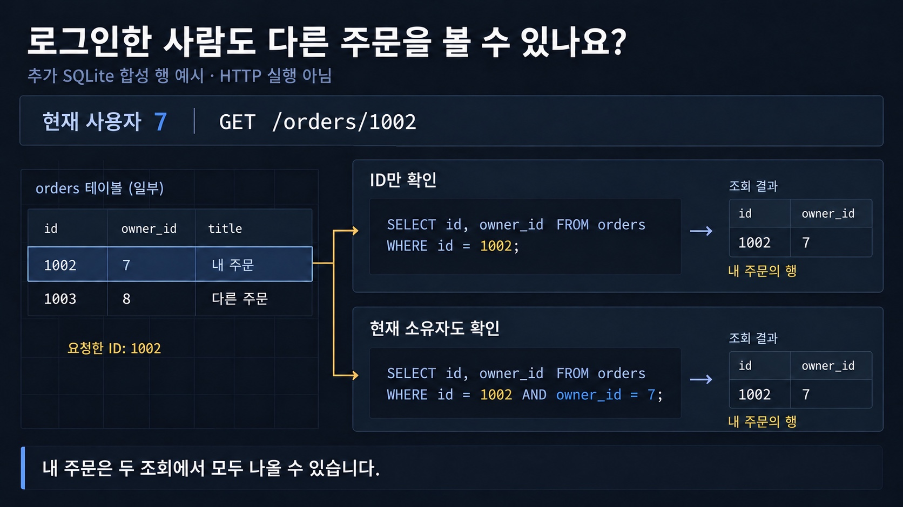

로그인한 주체는 주문 1002와 1003을 모두 볼 수 있을까요?
원문 §3.2·§4.1 · 추가 SQLite 조회
내 주문은 주체와 함께 조회
현재 주체 7이 소유한 주문 1002만 결과로 남습니다.

지금의 값과 경계
함께 읽을 코드·설명
숫자 ID나 UUID를 숨기는 것만으로 소유권 검사가 되지 않습니다.
출처·실험 원자료 보기
실험 범위와 읽는 방법
추가 Python·SQLite·Chrome 관측과 원문 기반 설명 모델을 구분합니다. 단계 선택은 기록을 탐색하는 동작이며 HTTP 요청을 다시 보내지 않습니다. 원문 Spring Boot 4.1.1·Java 25와 live 공식 문서 4.1.2는 별도 기준입니다. HTTP 실패 응답에는 읽을 수 있는 status/body를 채우지 않습니다.
기존 전체 웹 보안 개념 지도 보기
Delivery & operations · D11
이 문서에서 볼 내용
개발 도구·배포·운영
D11. 웹 보안 기초
D11. 웹 보안 기초 — 백엔드 개발자가 막아야 할 것들
원문 전체 · 코드·위험 경계·자가점검 보기
인증은 “누구인가”, 인가는 “무엇을 해도 되는가”를 확인한다. 브라우저의 CORS·CSRF 방어와 서버의 권한 검사는 서로 대체하지 않는다. 입력을 믿지 말고, 비밀번호·비밀값·로그·의존성도 운영 데이터처럼 수명주기별로 보호한다.
011. 큰 그림
웹 보안은 특정 애노테이션이 아니라, 요청이 브라우저·서버·데이터베이스를 거치는 모든 경계에서 “이 요청이 이 데이터에 이 작업을 할 자격이 있는가”를 확인하는 과정이다.
flowchart LR
A[브라우저 또는 API 클라이언트] --> B[HTTPS와 HSTS]
B --> C[Origin 정책과 CORS]
C --> D[인증: 세션 또는 토큰]
D --> E[인가: 역할과 객체 소유권]
E --> F[입력 검증과 출력 인코딩]
F --> G[파라미터 바인딩으로 DB 조회]
G --> H[(데이터베이스)]
H --> I[응답 보안 헤더와 안전한 로그]
D -. 쿠키 기반 요청 .-> J[CSRF 토큰 검증]
K[비밀값과 의존성] --> F
그림을 따라가면 TLS는 전송 중 도청·변조를 줄이고, CORS는 브라우저의 다른 출처 응답 읽기를 제어한다. 인증 뒤에는 반드시 인가가 와야 한다. GET /users/124를 로그인했다는 사실만으로 124번 사용자를 볼 자격이 생기지는 않는다. 입력·출력·로그도 각각의 경계에서 검증한다.
이 문서는 전체 개발 과정(D01)을 관통하는 보안 검토 항목이다. Spring Security 필터 구조는 S12, JWT·OAuth2 상세는 S13으로 넘긴다.
022. 용어 사전
| 용어 | 한 줄 정의 | 실무 예시 | 헷갈리는 것과 차이 |
|---|---|---|---|
| 인증(Authentication) | 주체가 누구인지 확인 | 로그인 세션 생성 | 인가는 그 주체의 행동 범위다 |
| 인가(Authorization) | 인증된 주체의 자원·행동 권한 확인 | 주문 취소 권한 검사 | 로그인 성공만으로 통과시키면 안 된다 |
| 세션 | 서버가 상태를 보관하고 쿠키로 식별 | JSESSIONID |
쿠키는 전달 수단이지 세션 그 자체가 아니다 |
| 토큰 | 요청마다 자격 정보를 전달하는 값 | Authorization: Bearer ... |
토큰 형식·발급은 S13에서 다룬다 |
| 공격 표면 | 공격자가 입력·접근할 수 있는 경계 | 공개 API, 파일 업로드 | 취약점은 그 표면의 검증 실패다 |
| OWASP Top 10 | 대표적인 웹 애플리케이션 위험 목록 | 설계 리뷰 체크리스트 | 전체 보안 표준이나 취약점 스캐너의 결과는 아니다 |
| SQL Injection | 입력이 SQL 문법으로 해석되는 공격 | id에 ' OR '1'='1 |
파라미터 바인딩은 값과 문법을 분리한다 |
| XSS | 공격 스크립트가 피해자 브라우저에서 실행 | 댓글에 <script> 저장 |
SQLi는 DB 경계, XSS는 브라우저 출력 경계다 |
| 출력 인코딩 | 출력 문맥의 특수문자를 데이터로 바꿈 | HTML 텍스트의 <를 <로 변환 |
입력 삭제만으로 모든 문맥을 안전하게 만들 수 없다 |
| CSRF | 피해자 브라우저의 자동 인증을 악용해 상태 변경 | 쿠키 세션으로 송금 요청 | CORS 오류가 CSRF 방어는 아니다 |
| CORS | 다른 Origin의 브라우저 응답 읽기 허용 정책 | https://app.example 허용 |
서버 간 호출·Postman에는 브라우저 CORS 제약이 없다 |
| Origin | scheme·host·port의 조합 | https://a.example:443 |
경로(path)는 Origin에 포함되지 않는다 |
| Preflight | 실제 요청 전에 보내는 OPTIONS 허가 질의 |
Access-Control-Request-Method |
모든 CORS 요청이 preflight인 것은 아니다 |
| IDOR | 객체 식별자만 바꿔 남의 자원에 접근 | /orders/1002를 /1003으로 변경 |
UUID로 바꿔도 객체 권한 검사가 없으면 해결되지 않는다 |
| HSTS | 브라우저가 해당 호스트를 HTTPS로만 접속하도록 기억 | max-age=31536000 |
인증서 검증을 대신하지 않는다 |
| 보안 헤더 | 브라우저의 위험한 동작을 제한하는 응답 헤더 | CSP, X-Content-Type-Options | 헤더만으로 서버 인가를 만들 수 없다 |
| 해시 | 원문 복원이 어려운 일방향 계산 | 비밀번호 검증 | 암호화는 복호화 키가 있고 목적이 다르다 |
| salt | 비밀번호마다 섞는 공개 가능한 랜덤 값 | 같은 비밀번호도 다른 결과 | 비밀 키가 아니며 해시와 함께 저장한다 |
| work factor | 해시 계산 비용 | BCrypt cost 조정 | 너무 낮으면 대입 공격, 너무 높으면 로그인 장애다 |
| 비밀값(secret) | 유출 시 권한을 주는 값 | DB 비밀번호, API key | 일반 설정값과 달리 접근·회전·감사가 필요하다 |
| SBOM | 산출물에 포함된 구성요소 목록 | CycloneDX, SPDX | 취약점 자체가 아니라 추적 가능한 재료 목록이다 |
| SCA | 의존성의 알려진 취약점을 분석 | Dependabot, Dependency-Check | 정적 분석·침투 테스트와 탐지 대상이 다르다 |
| 개인정보 로그 | 개인을 알아볼 수 있는 운영 기록 | 이메일·전화번호·토큰 | 디버깅 편의보다 최소 수집·마스킹이 우선이다 |
| 배포(릴리스/디플로이) | 빌드 산출물을 실행 환경에 반영 | CI/CD가 이미지와 설정 배포 | 릴리스는 공개 버전, 디플로이는 실행 반영이라는 구분을 쓸 수 있다 |
인증과 인가를 한 줄로 묶어 “로그인 여부”만 검사하는 것이 가장 흔한 사고 지점이다. CORS도 “서버가 요청을 차단한다”가 아니라 “브라우저가 응답을 JavaScript에 노출할지”를 제어한다. 공격자가 서버에 직접 요청할 수 있는 상황에서는 CORS 설정만으로 API를 보호하지 못한다.
033. 단계별로 보기3.1 요청 경계: HTTPS, Origin, CORS · 3.2 인증과 인가: 신원 확인 후 객체까지 확인 · 3.3 입력·출력·데이터베이스 경계 · 3.4 상태 변경과 CSRF
013.1 요청 경계: HTTPS, Origin, CORS
HTTPS는 TLS로 HTTP를 감싸 전송 중 기밀성과 무결성을 제공한다. 서버는 HTTPS 응답에 다음과 같은 HSTS를 보낼 수 있다.
Strict-Transport-Security: max-age=31536000; includeSubDomains브라우저는 이 응답을 받은 뒤 해당 호스트의 다음 http:// 접근을 https://로 바꾼다. HSTS는 현재 응답을 고치는 헤더가 아니며, 인증서 오류를 무시하게 만들지도 않는다. includeSubDomains는 모든 하위 도메인도 HTTPS 운영이 가능한 때만 선택한다. preload는 1년 이상의 max-age와 includeSubDomains가 필요하므로 도메인 전체의 준비를 확인한 뒤 사용한다.
Origin이 다른 프론트엔드가 API를 호출하면 브라우저는 서버의 CORS 응답 헤더를 확인한다. 위험할 수 있는 메서드·헤더·Content-Type 조합이면 실제 요청 전 OPTIONS를 보낸다.
sequenceDiagram
participant B as 브라우저
participant API as API 서버
B->>API: OPTIONS /orders (Origin, Access-Control-Request-Method)
API-->>B: 204 + Access-Control-Allow-Origin + Allow-Methods
alt 허용된 Origin과 요청
B->>API: POST /orders (Origin, Cookie 또는 Authorization)
API-->>B: 201 + 응답 데이터
else 허용되지 않은 Origin
B-->>B: JavaScript에 응답 노출하지 않음
end
Access-Control-Allow-Origin: *와 credentials를 함께 쓰면 안 된다. 허용 Origin 목록은 정확히 비교하고, 쿠키를 쓸 때는 Access-Control-Allow-Credentials: true와 명시적 Origin을 사용한다. 이것은 악성 사이트의 브라우저가 응답을 읽는 것을 제한할 뿐, 인증·인가를 대신하지 않는다.
023.2 인증과 인가: 신원 확인 후 객체까지 확인
일반적인 흐름은 다음과 같다.
sequenceDiagram
participant C as 클라이언트
participant S as Spring 애플리케이션
participant DB as 데이터베이스
C->>S: 로그인 자격 증명
S->>DB: 사용자 조회
DB-->>S: 저장된 비밀번호 해시
S-->>C: 세션 쿠키 또는 토큰
C->>S: GET /orders/1002
S->>S: 인증 주체 확인
S->>DB: 주문 1002와 현재 사용자 소유권을 함께 조회
DB-->>S: 소유 주문 또는 없음
S-->>C: 200 데이터 또는 404/403
IDOR는 findById(id)만 하고 현재 주체와의 관계를 확인하지 않을 때 생긴다. 방어는 식별자를 숨기는 것이 아니라 객체 수준 권한을 데이터 접근 조건에 포함하거나, 조회 후 명시적으로 소유자·조직·역할을 검사하는 것이다. 여러 테넌트가 있는 서비스라면 tenant_id = currentTenant 조건을 빼먹지 않는다.
033.3 입력·출력·데이터베이스 경계
SQL Injection의 핵심은 입력을 SQL 코드와 이어 붙이는 것이다. PreparedStatement의 ? 또는 JPA의 named parameter는 SQL 구조를 먼저 파싱하고 값은 별도 바인딩한다. 정렬 컬럼명처럼 파라미터로 바인딩할 수 없는 부분은 허용 목록으로 매핑한다. 입력 검증은 형식·길이·범위 검증이며 SQL Injection 방어를 대체하지 않는다.
XSS는 저장형·반사형·DOM 기반으로 나뉜다. HTML 본문·속성·JavaScript 문자열·URL·CSS는 인코딩 문맥이 다르다. Spring MVC 템플릿 자동 이스케이프를 유지하고 innerHTML·th:utext는 정제된 HTML 계약이 있을 때만 쓴다. CSP는 추가 방어이지 출력 인코딩의 대체가 아니다.
043.4 상태 변경과 CSRF
쿠키는 브라우저가 대상 도메인에 자동 첨부한다. 공격자 사이트가 사용자의 브라우저로 POST /transfer를 보내면, 서버가 쿠키 세션만 믿을 경우 요청은 로그인 사용자로 보인다. 이것이 CSRF다. 상태 변경 요청에는 Spring Security의 CSRF 토큰, SameSite 쿠키 정책, Origin/Referer 검사를 조합한다.
브라우저가 토큰을 Authorization 헤더에 직접 넣는 API는 다른 사이트가 그 헤더를 자동으로 만들 수 없으므로 전형적인 쿠키 CSRF 모델과 다르다. 그러나 토큰을 쿠키에 저장해 자동 전송하면 다시 CSRF 고려 대상이다. “REST니까 CSRF를 끈다”가 아니라 인증 자격 증명이 자동 전송되는지로 판단한다.
053.5 운영 경계: 비밀번호, 비밀값, 의존성, 로그
비밀번호는 복호화 가능한 암호문이나 SHA-256 단독 해시로 저장하지 않는다. 사용자별 salt와 느린 password hashing 함수(예: BCrypt, Argon2id, PBKDF2)를 사용하고, 해시 문자열 안에 알고리즘·cost·salt 메타데이터를 함께 저장한다.
로그인 시 평문을 같은 함수로 검증할 뿐 평문을 로그나 데이터베이스에 보관하지 않는다. OWASP는 work factor를 하드웨어와 로그인 부하로 측정해 정하고, 시간이 지나면 새 cost로 로그인 성공 시 재해시하는 방식을 안내한다.
DB 비밀번호·서명 키·외부 API key는 Git에 넣지 않는다. 로컬은 무시되는 .env나 개발 전용 설정, 운영은 환경변수·Kubernetes Secret·Vault 같은 비밀 저장소로 주입한다. 환경변수도 프로세스·덤프·로그에 노출될 수 있으므로 접근 권한을 최소화한다. 유출을 발견하면 커밋 삭제만 하지 말고 즉시 폐기·회전하고, 사용처를 감사하며, 재발 방지 스캔을 추가한다.
전이 의존성도 배포물에 포함된다. SBOM은 구성요소·버전·관계를 기록하고, SCA가 CVE와 영향 범위를 연결한다. 취약점은 실행 경로·심각도·패치 가능성·완화책을 보고 조치·예외를 기록한다. 로그에는 토큰·비밀번호·주민번호·카드번호를 원문으로 남기지 않고 식별자는 부분 마스킹한다.
044. 직접 해보기4.1 안전한 SQL 바인딩과 IDOR 방어를 먼저 설계하기 · 4.2 Spring Security의 기본 방어를 켠 최소 설정 · 4.3 CORS preflight 관찰 · 4.4 보안 헤더와 의존성 점검
아래 실습은 비용이 들지 않는 로컬 실습이다. Spring Boot 4.1.1 문서 기준 최소 Java는 17이고 Java 26까지 호환되므로, 기준 환경인 Java 25에서 실행할 수 있다. Spring Framework 7.0.9 이상이 요구된다.
014.1 안전한 SQL 바인딩과 IDOR 방어를 먼저 설계하기
Spring Data JPA를 쓴다면 입력값을 문자열로 이어 붙이지 말고, 현재 사용자 조건을 쿼리의 일부로 만든다.
public interface OrderRepository extends JpaRepository<Order, Long> {
Optional<Order> findByIdAndOwnerId(Long orderId, Long ownerId);
}
@RestController
class OrderController {
private final OrderRepository orders;
OrderController(OrderRepository orders) { this.orders = orders; }
@GetMapping("/orders/{id}")
Order get(@PathVariable Long id, Authentication authentication) {
Long ownerId = Long.valueOf(authentication.getName());
return orders.findByIdAndOwnerId(id, ownerId)
.orElseThrow(() -> new ResponseStatusException(HttpStatus.NOT_FOUND));
}
}실행 확인은 사용자 A로 로그인한 뒤 curl -i http://localhost:8080/orders/내주문ID와 다른 사용자의 ID를 각각 요청해 비교한다. 다른 사용자의 존재를 알려 주고 싶지 않다면 둘 다 404로 응답한다. 관리자 예외는 ownerId 조건을 우회하는 별도 정책으로 명시한다.
024.2 Spring Security의 기본 방어를 켠 최소 설정
다음 의존성을 build.gradle에 넣는다. 실제 Spring Security의 필터 체인 전체 구조는 S12에서 이어진다.
plugins {
id 'java'
id 'org.springframework.boot' version '4.1.1'
id 'io.spring.dependency-management' version '1.1.7'
}
dependencies {
implementation 'org.springframework.boot:spring-boot-starter-web'
implementation 'org.springframework.boot:spring-boot-starter-security'
testImplementation 'org.springframework.boot:spring-boot-starter-test'
testImplementation 'org.springframework.security:spring-security-test'
}@Configuration
@EnableWebSecurity
class SecurityConfig {
@Bean
SecurityFilterChain web(HttpSecurity http) throws Exception {
http
.authorizeHttpRequests(auth -> auth
.requestMatchers("/actuator/health", "/css/**").permitAll()
.anyRequest().authenticated())
.csrf(Customizer.withDefaults())
.headers(Customizer.withDefaults());
return http.build();
}
}./gradlew bootRun으로 실행하고, private와 health URL의 응답을 비교한다. HTML 폼·쿠키 세션의 상태 변경에는 CSRF를 유지한다. Bearer 헤더 API로 전환할 때도 CORS·CSRF 테스트를 다시 검토한다. 위 Spring 예제는 (미실행)이다.
034.3 CORS preflight 관찰
서버를 띄운 뒤 허용되지 않은 Origin과 허용된 Origin을 각각 보낸다.
curl -i -X OPTIONS http://localhost:8080/orders \
-H 'Origin: https://app.example' \
-H 'Access-Control-Request-Method: POST' \
-H 'Access-Control-Request-Headers: content-type'응답에 Access-Control-Allow-Origin, 허용 메서드·헤더가 있는지 본다. curl은 CORS를 강제하지 않으므로 응답이 왔다고 브라우저에서도 성공한다고 결론 내리면 안 된다. DevTools Network에서 OPTIONS와 실제 POST를 확인한다.
044.4 보안 헤더와 의존성 점검
curl -I https://localhost:8443/
./gradlew dependencies
./gradlew dependencyCheckAnalyze마지막 명령은 플러그인을 추가한 경우의 선택 실습이다. CVE를 무시하기 전에 런타임 포함 여부·패치 버전·예외 만료일을 확인한다. Strict-Transport-Security, X-Content-Type-Options: nosniff, 필요한 CSP·프레임 정책을 점검한다.
055. 자주 하는 오해와 실수
- “로그인했으니 모든
/users/{id}를 볼 수 있다” → 인증과 객체 인가는 별개다. 증상은 ID 숫자만 바꿔 타 사용자 정보가 나온다. → 현재 주체·테넌트 조건을 조회와 정책에 함께 넣고 A/B 계정의 교차 접근 테스트를 한다. - “CORS를 막았으니 API가 안전하다” → CORS는 브라우저의 응답 읽기를 제한한다. Postman, 서버 측 스크립트, 공격자가 직접 만든 요청은 여전히 도착한다. → 인증·인가·CSRF를 서버에서 별도로 검증한다.
- “입력에서
<script>만 지우면 XSS가 끝난다” → HTML·속성·JS·URL 문맥이 다르고 이중 인코딩·우회가 있다. → 컨텍스트별 출력 인코딩과 템플릿 자동 이스케이프를 기본값으로 둔다. - “SHA-256에 salt만 붙여 비밀번호를 저장한다” → 빠른 해시는 대량 대입에 유리하다. → BCrypt·Argon2id·PBKDF2처럼 비용을 조절할 수 있는 비밀번호 전용 함수를 사용하고 cost를 재평가한다.
- “UUID면 IDOR가 사라진다” → 추측이 어려운 식별자는 노출 가능성을 낮출 뿐 권한을 부여하지 않는다. → ID와 무관하게 객체 소유권·조직·역할을 확인한다.
- “HTTPS라서 HSTS가 필요 없다” → 사용자가 처음 HTTP 링크를 열거나 공격자가 다운그레이드를 유도하는 순간이 남는다. → HTTPS 응답에 HSTS를 설정하고 하위 도메인 운영 가능성을 확인한다.
- “Git에서 키 문자열만 삭제하면 유출이 취소된다” → 커밋·fork·CI 로그·캐시에 이미 복사됐을 수 있다. → 해당 키를 즉시 revoke/rotate하고 접근 로그를 조사한 뒤 secret scanning을 켠다.
- “취약한 의존성 경고는 직접 호출한 라이브러리만 보면 된다” → 전이 의존성이 실제 배포물에 들어간다. → lockfile·SBOM·SCA 결과를 릴리스 기준으로 보관하고 영향 경로와 예외를 기록한다.
066. 시각화 설계 메모
- 전체 요청 방어 파이프라인 [목적 | 1절 flowchart 지도화 | 노드/요소 | 브라우저, TLS, Origin, 인증, 인가, DB, 로그 | 관계 | 정상 흐름과 CSRF 점선 | 애니메이션 | 요청 → 인증 → 객체 권한 → DB → 응답 | 오해 | 인증과 인가는 다름].
- CORS preflight 타임라인 [목적 | 실제 요청 전 허가 설명 | 노드/요소 | 브라우저, OPTIONS, API, POST | 관계 | 요청-응답-분기 | 애니메이션 | Origin 검사 → POST 또는 JS 차단 | 오해 | CORS는 인증 방화벽이 아님]. 3.1의
sequenceDiagram과 연결한다. - IDOR 공격과 방어 비교 [목적 | ID 조작 시 유출·거부 비교 | 노드/요소 | 사용자, 두 ID, 권한 조건, DB | 관계 |
findById와findByIdAndOwnerId| 애니메이션 | 정상 조회 → ID 변경 → 200 또는 404 | 오해 | UUID는 인가가 아님]. - 비밀값 수명주기 [목적 | 코드에 키를 넣지 않는 이유와 대응 | 노드/요소 | Vault/K8s Secret, 런타임, Git, 회전 | 관계 | 주입·사용·감사·폐기 | 애니메이션 | 생성 → 사용 → 회전 | 오해 | Git 삭제로 유출 취소 불가].
077. 자가점검 Q&A (면접 대비)Q1. 인증과 인가를 실제 API에서 어떻게 나누나? · Q2. CORS와 CSRF는 어떻게 다른가? · Q3. PreparedStatement가 SQL Injection을 막는 원리는? · Q4. IDOR를 식별자 UUID로 바꾸면 왜 충분하지 않나?
01Q1. 인증과 인가를 실제 API에서 어떻게 나누나?
인증은 세션·토큰으로 요청의 주체를 확정하는 단계다. 인가는 그 주체가 특정 엔드포인트와 특정 객체에 수행할 수 있는지 확인한다. GET /orders/1에서 로그인 여부와 주문 1의 소유자 여부를 모두 검사해야 한다.
꼬리질문: 관리자 역할이면 객체 소유권 검사를 생략해도 되나?
답: 관리자 정책이 정말 전체 객체 접근을 허용한다면 명시적으로 예외 처리한다. “역할이 있으니 모든 ID 허용”을 암묵적으로 만들지 말고 감사 로그와 테스트로 남긴다.
02Q2. CORS와 CSRF는 어떻게 다른가?
CORS는 다른 Origin의 브라우저 JavaScript가 응답을 읽을 수 있는지 결정한다. CSRF는 브라우저가 자동으로 붙이는 쿠키 인증을 이용해 상태 변경을 일으키는 공격이다. CORS를 엄격하게 설정해도 서버는 CSRF 토큰·SameSite·Origin 검사를 별도로 고려해야 한다.
꼬리질문: Bearer 헤더 API는 언제 CSRF가 줄어드나?
답: 브라우저가 다른 사이트 요청에 임의의 Authorization 헤더를 자동 첨부하지 않는 모델이면 전형적인 쿠키 CSRF가 줄어든다. 토큰을 쿠키에 넣거나 다른 자동 인증 수단을 쓰면 다시 검토한다.
03Q3. PreparedStatement가 SQL Injection을 막는 원리는?
SQL 구조와 사용자 값을 별도로 파싱·바인딩하기 때문이다. 입력에 따옴표나 SQL 키워드가 있어도 값의 데이터로 처리된다. 단, 컬럼명·정렬 방향처럼 바인딩할 수 없는 구문은 허용 목록으로 제한해야 한다.
꼬리질문: JPA를 쓰면 무조건 안전한가?
답: 파라미터 바인딩 JPQL은 안전한 방향이지만 문자열로 JPQL·native SQL을 조합하면 같은 문제가 생긴다. 동적 조건과 정렬 값도 생성 경로를 점검한다.
04Q4. IDOR를 식별자 UUID로 바꾸면 왜 충분하지 않나?
UUID는 추측 가능성을 낮추는 방어층일 뿐 권한 검사가 아니다. 유출된 UUID나 목록 API, Referer 등으로 식별자를 얻으면 여전히 접근할 수 있다. 현재 사용자·테넌트·역할과 객체의 관계를 서버에서 확인해야 한다.
꼬리질문: 403과 404 중 무엇을 반환하나?
답: 정책에 따라 다르다. 존재 자체를 숨기려면 타 사용자 객체를 404로 통일할 수 있고, 권한 부족을 명시하는 API 계약이면 403을 쓴다. 어느 경우든 데이터는 반환하지 않는다.
05Q5. 비밀번호 해시와 암호화의 차이는?
해시는 검증을 위한 일방향 계산이라 서버가 원문을 복원할 필요가 없다. 암호화는 키로 복호화할 수 있어 데이터 기밀성에 쓰인다. 비밀번호에는 사용자별 salt와 비용 조절이 있는 전용 password hashing 함수를 사용한다.
꼬리질문: salt를 비밀로 관리해야 하나?
답: salt는 공개돼도 되며 해시와 함께 저장한다. 비밀이어야 하는 것은 pepper나 암호화 키 같은 별도 비밀값이다. salt의 목적은 동일 비밀번호의 동일 해시와 사전 계산 공격을 어렵게 하는 것이다.
06Q6. HSTS가 해결하지 못하는 것은?
HSTS는 브라우저가 다음 접속을 HTTPS로 바꾸도록 한다. 인증서가 유효한지 검증하거나 서버의 인가·입력 검증을 수행하지 않는다. 첫 접속 전 보호 공백과 잘못 운영한 하위 도메인 문제도 고려해야 한다.
꼬리질문: includeSubDomains를 바로 켜면 되나?
답: 모든 하위 도메인이 HTTPS와 유효한 인증서로 서비스 가능한지 먼저 확인한다. 준비되지 않은 하위 도메인이 있으면 장애가 될 수 있으며, preload는 더 강한 운영 약속이다.
07Q7. 취약 의존성 경고를 받으면 어떤 순서로 처리하나?
배포 산출물의 실제 버전과 전이 의존성을 SBOM으로 확인하고, CVE의 영향 경로·심각도·패치 버전을 조사한다. 업그레이드·기능 완화·격리 중 조치를 선택하고, 불가피한 예외는 만료일과 책임자를 기록한다. CI의 SCA는 개발자 판단을 대체하지 않는다.
꼬리질문: SBOM만 있으면 취약점이 자동으로 해결되나?
답: SBOM은 무엇이 들어갔는지를 추적하는 목록이다. SCA와 보안 공지 매칭, 패치·재빌드·재검증이 이어져야 위험이 줄어든다.
088. 참고문헌
- OWASP Top 10 — https://owasp.org/www-project-top-ten/ — 웹 애플리케이션의 대표 위험 목록과 프로젝트 설명.
- SQL Injection Prevention Cheat Sheet — https://cheatsheetseries.owasp.org/cheatsheets/SQL_Injection_Prevention_Cheat_Sheet.html — 파라미터화, 저장 프로시저, 허용 목록 중심의 방어.
- Cross-Origin Resource Sharing (CORS) — https://developer.mozilla.org/en-US/docs/Web/HTTP/Guides/CORS — Origin, preflight, credentials 동작.
- Password Storage Cheat Sheet — https://cheatsheetseries.owasp.org/cheatsheets/Password_Storage_Cheat_Sheet.html — salt, work factor, 비밀번호 전용 해시 선택.
- Cross Site Request Forgery — https://docs.spring.io/spring-security/reference/servlet/exploits/csrf.html — Spring Security의 CSRF 구성과 사용 사례.
- Strict-Transport-Security header — https://developer.mozilla.org/en-US/docs/Web/HTTP/Reference/Headers/Strict-Transport-Security — HSTS 지시어와 브라우저 동작.
- Insecure Direct Object Reference Prevention — https://cheatsheetseries.owasp.org/cheatsheets/Insecure_Direct_Object_Reference_Prevention_Cheat_Sheet.html — 객체 수준 인가 누락과 IDOR 예시.
- Secrets Management Cheat Sheet — https://cheatsheetseries.owasp.org/cheatsheets/Secrets_Management_Cheat_Sheet.html — 비밀값 저장·주입·회전·감사 수명주기.
- Dependency Graph SBOM Cheat Sheet — https://cheatsheetseries.owasp.org/cheatsheets/Dependency_Graph_SBOM_Cheat_Sheet.html — SBOM 구성요소와 공급망 추적.
- Vulnerable Dependency Management Cheat Sheet — https://cheatsheetseries.owasp.org/cheatsheets/Vulnerable_Dependency_Management_Cheat_Sheet.html — 취약 의존성 발견 후 판단·완화 흐름.
- Spring Boot System Requirements — https://docs.spring.io/spring-boot/system-requirements.html — Spring Boot 4.1.1의 Java·Spring Framework 요구사항.
- Spring Security Security HTTP Response Headers — https://docs.spring.io/spring-security/reference/servlet/exploits/headers.html — 기본 보안 응답 헤더와 커스터마이징.